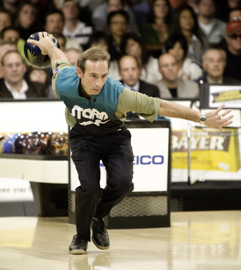
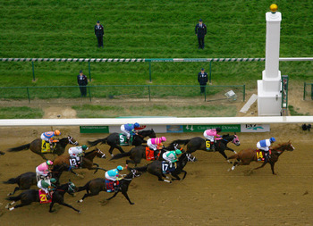

One of the best sporting technoligies out is a treadmill to determine which running shoes you need.
You will walk a couple of 100 meters and a screen will show how you place you foot in the shoes you have tested.
Based on that you can choose new choes and will determine again if the shoes fit.
Eventually you will have some good data which shoes will fit the best. The data will be sent via email.

This one could be a little bit silly, but it is a good innovation. I am talking about the Computerized Scoring Bowling.
A computer will focus on the score, while you can focus on the bowling aspect and don't have to count your scores.
These small innovations have a impact about our daily life without you aven noticing.
Innovation 3, Photo finishes.

And the last innovation i want to talk about are the invention of photo finishes.
Since this invention there were no more questions about who won a race.
The cameras will make 3000 frames per second, This way, nothing can go wrong.
Most of the time the cameras are used for running games or horse racing.